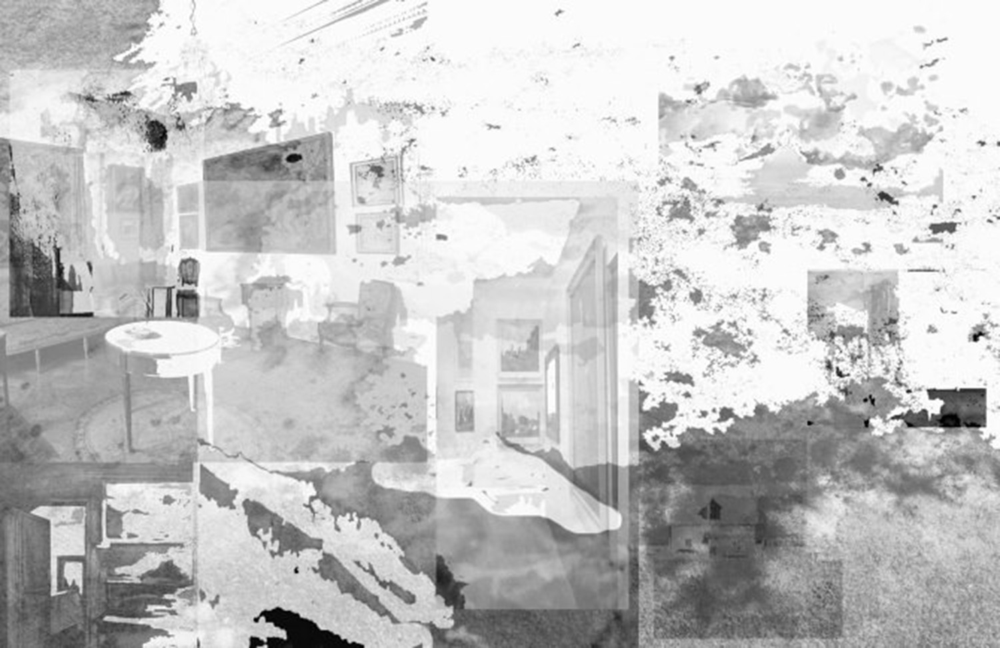

Curatrice: Stéphanie Roland
23 et 24 février 2019

À l’image de l’Hectolitre, club libertin qui s’est reconverti en lieu d’expérimentation artistique, Shifting foundations développe une réflexion sur le changement de statut des espaces dans un contexte contemporain. Selon Hito Steyerl, artiste et théoricienne des médias, l’internet a multiplié ses points de transfert et surpassé leurs frontières jusqu’à atteindre le monde physique en mode offline. Quel changement ce phénomène implique t-il au niveau de l’espace? C’est dans cette perspective que les artistes explorent ici des lieux qui ont perdu leur fonction première et se réinventent, des friches, des étendues abandonnées, des zones autonomes temporaires, des surfaces porteuses d’une révolution imminente, des immensités réinvesties par l’Utopie. Jour 1 - Samedi 23 février, vernissage de 18 à 21h Endless House VI _ Imaginary world wide web Exhibitions Installation Vidéo, performance, diffusion en live réalisée par les artistes Claire Ducène & Nicolas Riquette (Endless House collective_BE), Giulia DeVal (Torino_IT), MOD’s & Areal collectives (Barcelona_SP) Fidèle à sa passion pour les lieux particuliers et l’architecture, le collectif Endless House s’établit cette fois à l’Hectolitre pour poursuivre son exploration des liens existant entre les espaces physiques et les territoires mentaux. Pour l’occasion le collectif rassemble les points de vue de quatre espaces distincts, à Bruxelles, à Barcelone, à Turin ainsi qu’un espace imaginaire. Les artistes s’associent pour articuler performances, œuvres sonores, images fixes ou animées, au sein d’un labyrinthe tridimensionnel, désormais caractéristique de l’œuvre du collectif. Endless House VI_Imaginary world wide web Exhibitions figure la toute dernière extension de cette « maison sans fin » développée par le collectif depuis le début de l’année 2016. Aujourd’hui, le collectif prend place dans un ancien club échangiste et étire ses ramifications dans d’autres pays d’Europe, reliés ensemble via des connexions Internet. Depuis Barcelone, la performance Closed-Circuit Televisions_CCTV explore les visions d’un hors-champ au cœur d’une « control room » où les artistes présentent leurs projets derrière une caméra interactive. À Turin, l’artiste sonore Giulia DeVal présente son projet Green Larynx Uterus. Au cœur d’un lieu imaginaire, Claire Ducène propose un voyage entre deux espaces-temps intitulé"Hectolitre false fantasies". La scénographie de Nicolas Riquette connecte l’ensemble des espaces au cœur de Bruxelles, l’espace-hôte. Jour 2 - Dimanche 24 février, programme cinéma / performance, 16 à 19h Oeuvres de Rosa Barba, Samuel Fleury, Aglaia Konrad, Enrique Ramirez et Thomas Van Reghem. Goûter architectural cuisiné par la curatrice. Comment repenser nos espaces à une époque définie par l’augmentation des inégalités, le réchauffement climatique et le flux migratoire? L’accélération de ces problématiques se traduira sans doute dans le future par une transformation radicale de nos modes de vie, celle-ci étant, pour le moment, majoritairement individuelle et fragmentée. Chantier, salle d’attente, atelier d’artiste, maison abandonnée aux flots, architecture utopique, rue remplie de manifestants. Les artistes ont investi ces espaces parallèles de manière symbolique, en interrogeant leur dimension architecturale, historique ou politique mais également les mythes ou fictions qu’ils véhiculent. [image: Claire Ducène, "Amnésie", impression sur plexiglas opal]